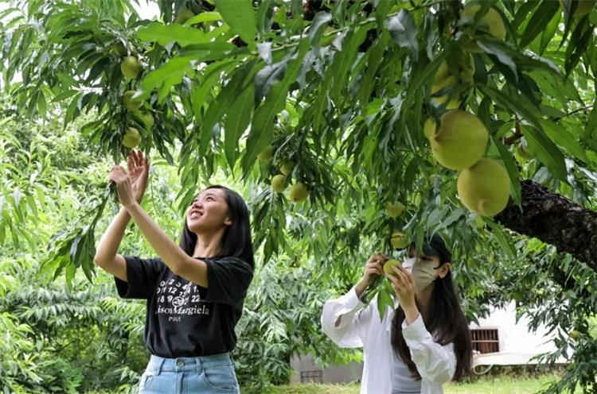
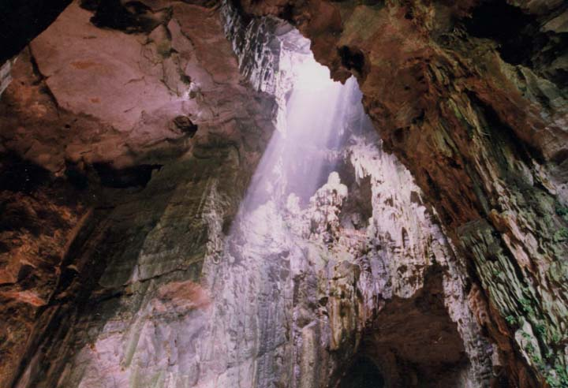
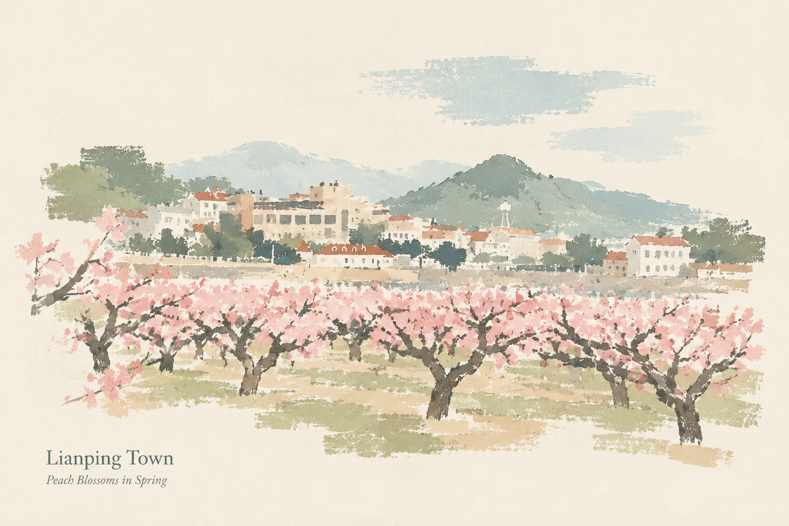
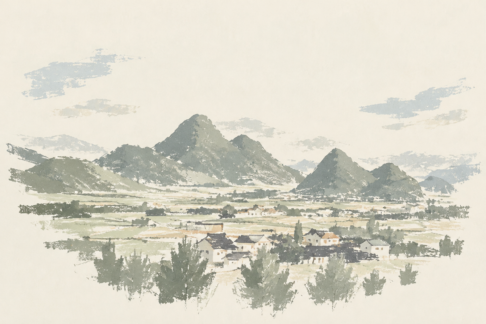
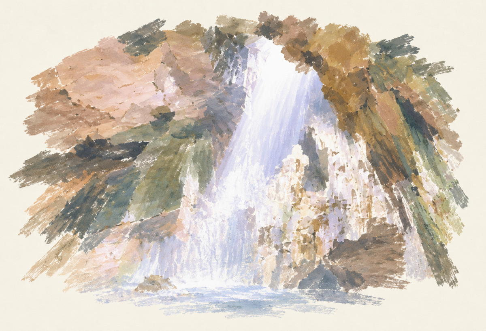

NATURE & SCENERY
广东 · 河源 · 连平
走进山水
在桃园、田野与溶洞之间，
选择一处你想认识的风景。






场景均为连平真实照片：上坪桃花、桃园采摘、 内莞喀斯特、圣迹苍岩溶洞。
桃园 · 季节
上坪桃园
桃花与桃果，让同一片桃园呈现不同的季节面貌。 上坪也是认识连平鹰嘴蜜桃的重要地方。
PLACES TO REMEMBER
先记下来，
以后去看看。
清单仅保存在当前浏览器，
不需要注册或登录。
还没有加入地点，先选一处你喜欢的风景吧。
清单不是行程规划。 出行前请另行核实开放情况、交通、天气与预约信息。